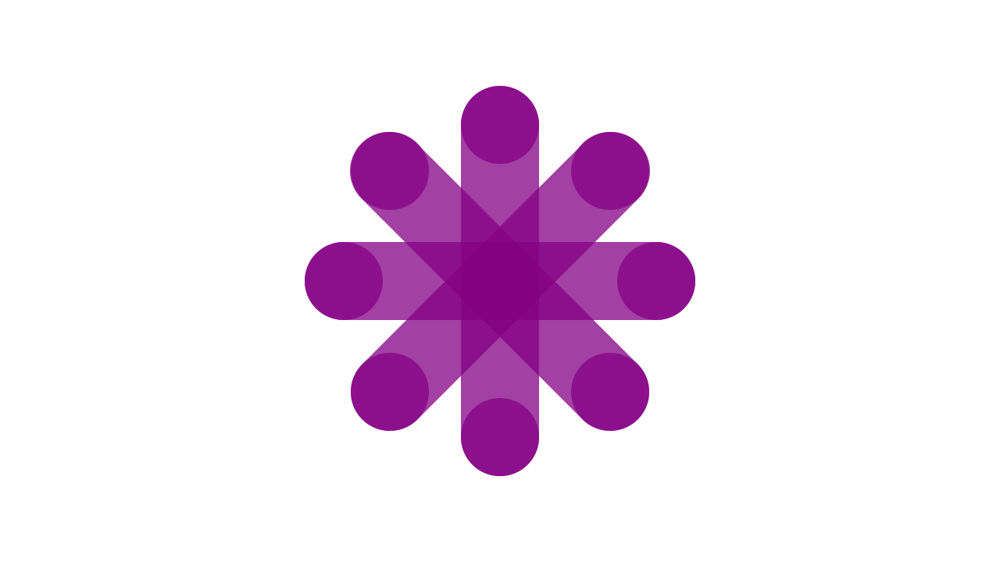

Building Comentsys Assets
Comentsys.Assets.FluentEmoji was the first asset package for .NET Standard that I developed which came from a need to create experiences using Emoji made possible thanks to Microsoft open-sourcing their Fluent Emoji on GitHub at github.com/microsoft/fluentui-emoji. Comentsys.Assets.FluentEmoji offers the flat style of Fluent Emoji and more recently the metadata to help make using them easier as well as offer access to the 3D PNG-based along with the animated-PNG Fluent Emoji from github.com/microsoft/fluentui-emoji-animated. Comentsys.Assets.FluentEmoji.Shaded is for the colourful style of Emoji and Comentsys.Assets.FluentEmoji.Contrast is for the high-contrast style of Emoji. These fun and familiar emoji have been a useful resource for my own tutorials and workshops which you can find at tutorialr.com.
Comentsys.Assets.FluentIcons for .NET Standard came from another open-source project from Microsoft, which is their Fluent System Icons which they shared on GitHub at github.com/microsoft/fluentui-system-icons. Comentsys.Assets.FluentIcons offers the regular style of Fluent System Icons along with more recently adding metadata along with Comentsys.Assets.FluentIcons.Filled which offers the filled style of Fluent System Icons. These icons were found thanks to me wanting to use many of the Microsoft icons assets I had seen in presentations and thanks to finding this not only made them more consistent with Microsoft's own but also to offer for other developers to use. Plus like many asset packages the colours can be customised so they can fit in with any .NET application from Blazor to Windows App SDK and beyond.
Comentsys.Assets.Games was inspired by a need to create games for my tutorials and originally shipped with Chess Pieces and Mahjong Tiles but has also been joined by Playing Cards that have been kindly shared for us by anyone for any purpose on commons.wikimedia.org. Comentsys.Assets.Games also has been joined by assets that I have created myself including Dice and Dominoes along with a game Piece and Board to allow a variety of games to be represented.
Comentsys.Assets.Flags also came from an idea to make a flag guessing game based upon the flags made up from vertical or horizontal bars which was originally just going to be shapes but thought finding a source of actual flags would be better and found a resource of curated flags on GitHub at github.com/lipis/flag-icons. Comentsys.Assets.Flags includes rectangular and square flags for all countries along with being recently updated with metadata with additional information about flags including countries and capital cities. I'm grateful for the generosity of those who share their resources and be able to share in turn for .NET developers to leverage in their applications.
Comentsys.Assets.Display was something I put together for a Windows Widget Workshop which would use original designs for a seven-segment display, this came from an older project of mine where I designed the segments myself using pencil, rule and graph paper which I cleaned up in Inkscape to produce the final design used in the package. I also created a five-by-seven matrix display using squares that I designed in Inkscape which has been later joined by designs using circles, hexagons and octagons. Comentsys.Assets.Display is entirely my own work and forms the basis of two of the display components in my latest toolkit of Comentsys.Toolkit.Blazor. You can find all the packages I have created including toolkits as well as these asset packages at comentsys.com/packages.